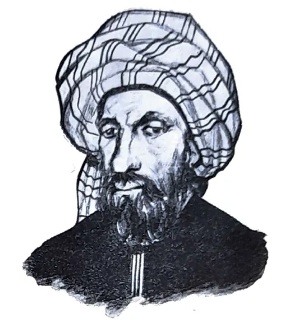

Who Was Ibn Bajjah?
Ibn Bajjah, also known as Ibn Bajja and by the Latinized name Avempace, was an important philosopher, scientist, and polymath of medieval Al-Andalus. He lived during the late eleventh and early twelfth centuries and died in 1139. Born in or near Saragossa, he became one of the earliest and most influential Muslim philosophers associated with the philosophical tradition of Islamic Spain.
Ibn Bajjah lived during a period of major political and intellectual change in Al-Andalus. He was connected with the cultural life of Saragossa and later worked in other parts of the western Islamic world. His career combined philosophy with practical and scientific interests, reflecting the broad intellectual ideal of the medieval philosopher-scientist. His thought helped establish a major Aristotelian philosophical tradition in Al-Andalus.
Ibn Bajjah's philosophy was strongly influenced by Aristotle, but he also drew extensively upon the philosophical tradition developed in the Islamic world, especially the work of Al-Farabi. His surviving writings and fragments address logic, natural philosophy, the soul, knowledge, intellect, ethics, and political philosophy. He also wrote on scientific subjects including medicine, astronomy, mathematics, and music.
Ibn Bajjah is particularly remembered for his attempt to explain human intellectual perfection and the possibility of attaining the highest forms of knowledge. A central question in his philosophy concerns the relationship between the human intellect and the Active Intellect, an important concept inherited from the Aristotelian and late ancient philosophical traditions. For Ibn Bajjah, intellectual development represented the highest fulfillment of human nature.
These ideas are developed especially in his famous work The Rule of the Solitary, in which he examines the condition of the philosophically minded individual living within an imperfect or intellectually corrupt society. The "solitary" does not necessarily mean a person who simply withdraws from all human contact. Rather, Ibn Bajjah explores how an individual may preserve intellectual and moral independence when a genuinely virtuous political community is absent.
Although many of Ibn Bajjah's writings survive only in fragments or incomplete form, his influence was significant. His philosophical work helped shape the development of later Andalusian thought, particularly the intellectual environment inherited by thinkers such as Ibn Tufayl and Averroes (Ibn Rushd). Ibn Bajjah therefore occupies an important position in the history of Islamic philosophy as one of the major figures who developed and transformed the Aristotelian tradition in medieval Al-Andalus.
Ibn Bajjah: Quick Facts
- Full name — Abū Bakr Muḥammad ibn Yaḥyā ibn al-Ṣāʾigh
- Known as — Ibn Bajjah, Ibn Bajja, or Avempace
- Born — Probably around 1085 CE
- Birthplace — Zaragoza, Al-Andalus
- Died — c. 1138–1139 CE in Fez
- Philosophical tradition — Andalusian and Islamic philosophy
- Major influence — Aristotle and Aristotelian philosophy
- Major philosophical subjects — Logic, natural philosophy, psychology, epistemology, intellect, ethics, metaphysics, and political philosophy
- Famous work — The Rule of the Solitary
- Important philosophical work — Epistle of Conjunction of Intellect with Man
- Latin name — Avempace
Ibn Bajjah's Early Life and Historical Background

Ibn Bajjah was probably born in Zaragoza (Saragossa), then the capital of the Taifa kingdom ruled by the Banu Hud, some time before 1085. His precise year of birth remains uncertain, although modern scholarship commonly places it around the late eleventh century. Zaragoza was an important political and cultural center and attracted scholars, poets, scientists, and intellectuals from different parts of Al-Andalus.
He lived during a period of major political transformation in the Iberian Peninsula. The decline of the Taifa kingdoms and the expansion of Almoravid power altered the political landscape in which Ibn Bajjah developed his career. At the same time, philosophical learning in Al-Andalus was becoming increasingly connected with the wider Arabic-speaking intellectual tradition.
Ibn Bajjah developed interests extending far beyond philosophy alone. Biographical and bibliographical sources associate him with logic, natural philosophy, mathematics, astronomy, medicine, music, and other scientific disciplines. This combination of interests reflects the medieval ideal of the philosopher-scientist, in which the study of nature, logic, mathematics, and metaphysics formed interconnected parts of intellectual inquiry.
He also became involved in political and administrative life. Sources connect him with the rulers of Zaragoza, and his career later took him through different regions of Al-Andalus and North Africa. The details of his movements are not always certain, but he eventually reached Fez, where he died in 1139 according to the dating most commonly accepted by modern scholarship.
Why Is Ibn Bajjah Also Called Avempace?
Avempace is the name by which Ibn Bajjah became known in much of the medieval Latin philosophical tradition. His full Arabic name was Abu Bakr Muhammad ibn Yahya ibn al-Sa'igh Ibn Bajjah, although he is generally known simply as Ibn Bajjah. The transmission of Arabic names into Latin produced forms that sometimes differed considerably from their original pronunciation.
As a result, philosophical literature may refer to the same thinker as Ibn Bajjah, Ibn Bajja, Ibn Bājja, or Avempace. Medieval Latin sources also sometimes preserved forms connected with Ibn al-Sa'igh, an element of his name associated with the Arabic word for a goldsmith.
When searching for Avempace philosophy, readers are therefore studying the same Andalusian thinker known in Arabic as Ibn Bajjah. The use of both names is particularly important when tracing the transmission of his ideas through Arabic, Hebrew, and Latin philosophical traditions.
Ibn Bajjah and Andalusian Philosophy
Ibn Bajjah occupies an important position in the development of Andalusian philosophy. Philosophy in Al-Andalus emerged within an intellectual world connected with the wider Arabic-speaking Islamic tradition, where Greek philosophical and scientific materials had already been translated, studied, interpreted, and transformed by earlier thinkers.
Philosophy developed later in Muslim Al-Andalus than in several major intellectual centers farther east. By Ibn Bajjah's lifetime, however, the region possessed an increasingly sophisticated environment for the study of logic, natural philosophy, mathematics, and metaphysics. Ibn Bajjah became one of the major figures through whom this philosophical tradition achieved greater maturity.
His work belongs to the tradition often called falsafa, the philosophical movement that engaged deeply with Aristotle and other Greek thinkers through the Arabic philosophical tradition. His writings helped establish an important intellectual background for later Andalusian philosophers, including Ibn Tufayl and Ibn Rushd (Averroes).
Ibn Bajjah therefore represents an important stage in the development of philosophical Aristotelianism in the western Islamic world. His work demonstrates that Al-Andalus was not merely receiving ideas from elsewhere: its philosophers were developing distinctive approaches to questions concerning intellect, nature, human perfection, and the relationship between philosophy and political life.
Ibn Bajjah and Aristotle
Aristotle was one of the most important influences on Ibn Bajjah's philosophy. Ibn Bajjah wrote interpretations, commentaries, and philosophical discussions concerning Aristotelian works, particularly in logic and natural philosophy. His engagement with Aristotle also reflects the long tradition of Arabic commentary that had developed before him.
His philosophical background was not based on Aristotle alone. Ibn Bajjah inherited an Arabic Aristotelian tradition shaped by thinkers such as Al-Farabi and by ancient commentators whose interpretations of Aristotle circulated in Arabic. This broader tradition provided important conceptual tools for his investigations.
Ibn Bajjah did not simply repeat ancient arguments. He used Aristotelian concepts to investigate questions concerning nature, motion, causation, the soul, knowledge, and human perfection. His treatment of these problems often reflects his own systematic attempt to understand how the study of nature leads toward the highest forms of intellectual knowledge.
The importance of Aristotle helps place Ibn Bajjah within Islamic Aristotelianism. It also explains his historical importance for later Andalusian thinkers, especially Ibn Rushd, whose own philosophical career would become closely associated with the interpretation and defense of Aristotle.
Ibn Bajjah's Philosophy of the Soul
The soul is an important subject in Ibn Bajjah's philosophy. His philosophical psychology investigates the relationship between bodily life, sensation, imagination, memory, and intellectual understanding. Like other thinkers working within the Aristotelian tradition, he regarded the study of the soul as essential for understanding the different capacities of living beings.
Human knowledge does not begin as pure abstract thought. Sensory experience provides the materials from which higher cognitive activity develops, while faculties such as imagination preserve and organize representations derived from experience. Ibn Bajjah was particularly interested in explaining how human beings move beyond these stages toward genuinely intellectual knowledge.
This movement is important because the human intellect seeks intelligibles rather than merely particular sensory objects. The philosopher must therefore understand how forms known in connection with material things can become objects of intellectual apprehension.
Ibn Bajjah's philosophy of the soul consequently provides an important foundation for his discussions of knowledge, intellect, human perfection, and the Active Intellect. Psychology is not an isolated subject in his thought; it forms part of a broader account of how human beings can attain their highest intellectual fulfillment.
What Was Ibn Bajjah's Theory of Intellect?
Ibn Bajjah's theory of intellect is one of the most important and difficult parts of his philosophy. He distinguishes intellectual understanding from forms of cognition associated with sensation and imagination, while also explaining how intellectual knowledge arises from the human encounter with the natural world.
For Ibn Bajjah, the intellect is capable of apprehending intelligible forms rather than merely receiving information about individual material objects. Sensory experience is concerned with particular things, whereas intellectual understanding grasps forms and universal structures that can be known independently of a particular object being immediately present.
Intellectual development therefore involves a movement from cognition connected with material and particular objects toward increasingly universal and immaterial intelligibles. Ibn Bajjah was especially interested in the different degrees through which human understanding can progress.
This theory becomes central to his account of human perfection. The highest intellectual development is associated with the possibility of conjunction with the Active Intellect, a theme that connects his psychology, epistemology, metaphysics, and ethics.
Ibn Bajjah and the Active Intellect
The Active Intellect occupies a central position in Ibn Bajjah's account of intellectual development. The concept belongs to a long philosophical tradition that developed from Aristotle's discussion of intellect and was elaborated by later Greek and Islamic philosophers.
Ibn Bajjah describes human intellectual development as a progression toward forms of knowledge that become increasingly independent of particular material objects. The intellect does not remain permanently confined to sensory representations but can attain intelligibles that possess a more universal and immaterial character.
His writings on conjunction explore the possibility that the perfected human intellect can attain a relationship with the Active Intellect. This highest state represents not merely the accumulation of information but a transformation in the mode of intellectual understanding.
The precise interpretation of this conjunction is one of the most debated aspects of Ibn Bajjah's philosophy. Nevertheless, the Active Intellect clearly plays a decisive role in his conception of intellectual fulfillment and became one of the most distinctive themes associated with Avempace's philosophy.
Ibn Bajjah's Philosophy of Knowledge and Epistemology
Epistemology in Ibn Bajjah's philosophy concerns the development of human cognition from sensory awareness toward intellectual understanding. Human beings encounter the world through the senses, but sensation alone does not provide the highest form of knowledge available to them.
Faculties such as imagination preserve and organize representations derived from sensory experience. The intellect, however, is capable of apprehending intelligibles: forms of understanding that are not restricted to one particular material object at one particular moment.
Ibn Bajjah's account is therefore concerned with different degrees of cognition. Intellectual development involves moving from forms tied more closely to material experience toward increasingly universal and immaterial forms of knowledge.
Knowledge is consequently not merely the accumulation of information. It is part of a process through which human beings realize their specifically rational nature. This close relationship between knowing and becoming intellectually complete is one of the central principles of Ibn Bajjah's philosophy.
Ibn Bajjah's Philosophy of Human Perfection
A central question in Ibn Bajjah's philosophy is human perfection. He connects the highest form of human fulfillment with the actualization of specifically human capacities, especially reason and intellect.
Human beings possess bodily and sensory capacities, but they also have the ability to understand intelligible forms. Intellectual development therefore allows a person to move beyond a life governed solely by immediate sensation, imagination, appetite, or external circumstances.
The highest form of perfection is associated with intellectual knowledge and, in Ibn Bajjah's mature philosophical account, with the possibility of conjunction with the Active Intellect. This makes philosophical inquiry part of a larger process of human self-realization.
His conception of perfection also explains the close relationship between intellect, ethics, and political life. A person's highest end may require intellectual conditions that are not always supported by the society in which that person lives, creating the problem addressed through his idea of the solitary.
What Was Ibn Bajjah's Philosophy of Ethics?
Ibn Bajjah's ethics is closely connected with his account of human perfection. A good human life requires the proper development and ordering of human capacities rather than complete submission to bodily desires, social habits, or accidental external circumstances.
His ethical thought is therefore strongly intellectual in character. The highest human fulfillment is connected with the development of rational understanding and the pursuit of knowledge. This does not mean that ordinary practical life is irrelevant, but that human actions should be ordered in a way compatible with the person's highest intellectual end.
Ibn Bajjah also examines the difficulty of pursuing such a life within a defective political environment. The individual's ethical and intellectual development takes place within society, yet existing societies may be governed by beliefs and practices that do not support philosophical truth.
His ethics therefore cannot be completely separated from his political philosophy. The question of how a rational individual should live becomes particularly urgent when the surrounding community is not a genuinely virtuous or philosophically ordered one.
Ibn Bajjah's Political Philosophy
Ibn Bajjah's political philosophy is distinctive because it gives special attention to the position of the intellectually developed individual within an imperfect political community. His thought develops partly in conversation with earlier philosophical discussions of the virtuous city, especially those associated with Al-Farabi.
Rather than assuming that every existing society is organized around genuine knowledge, Ibn Bajjah asks what happens when a person devoted to philosophical truth lives among communities governed by mistaken opinions or defective practices.
This problem leads directly to his famous discussion of the solitary. The solitary represents a person whose intellectual orientation differs from that of the surrounding community and who must therefore find a way to preserve the conditions necessary for philosophical development.
His political philosophy thus connects the fate of the individual with the condition of society. The absence of a perfect political community does not make intellectual perfection impossible, but it changes the way in which the philosopher must pursue the highest human end.
Ibn Bajjah's The Rule of the Solitary
The Rule of the Solitary, also known as Tadbir al-Mutawahhid, is Ibn Bajjah's best-known work on the condition of the individual seeking human perfection outside an ideal political community. The Arabic title may also be translated as The Regimen or Governance of the Solitary.
The work examines how an individual may order his life when living in a society that does not possess the characteristics of a genuinely virtuous political community. Ibn Bajjah is therefore concerned with the practical and intellectual problem of pursuing the highest human end under imperfect social conditions.
The solitary in this work is not simply a hermit who abandons all human contact. The concept refers more fundamentally to a person who, because of intellectual insight, may differ from the opinions and aims dominant within the surrounding society.
The work brings together themes from ethics, political philosophy, psychology, epistemology, and metaphysics. It is particularly important because it shows how Ibn Bajjah connects the organization of an individual's life with the larger philosophical goal of intellectual perfection.
What Does Ibn Bajjah Mean by the "Solitary"?
The word solitary in Ibn Bajjah's philosophy should not be understood simply as a person who chooses complete physical isolation. The solitary is primarily distinguished by an intellectual condition: he possesses forms of understanding that may not be shared by the society in which he lives.
Such a person may therefore be "solitary" even while remaining within a community. Ibn Bajjah is concerned with the philosopher or intellectually developed individual whose ultimate aims differ from the dominant opinions, habits, and pursuits of the surrounding population.
The solitary must order his life carefully so that social conditions do not prevent intellectual development. This may require distance from certain beliefs or practices, but Ibn Bajjah's concept should not be reduced to a simple recommendation that philosophers physically withdraw from society.
The idea expresses a fundamental tension in Avempace's political philosophy: human beings are naturally connected with social life, yet an imperfect society may obstruct rather than promote the highest forms of human development.
Ibn Bajjah and the Conjunction of Intellect
Ibn Bajjah's discussion of the conjunction of intellect with man represents one of the highest and most complex stages of his theory of intellectual development. His Epistle on the Conjunction of Intellect with Man investigates how human understanding can progress toward a relationship with the separate Active Intellect.
The human intellect initially knows forms in ways connected with material experience and the faculties of the soul. Through intellectual development, however, the philosopher seeks increasingly universal and immaterial intelligibles.
Conjunction represents the culmination of this intellectual ascent. Ibn Bajjah's account is concerned with a mode of knowledge in which the human intellect attains its highest possible actuality and fulfillment.
This theme links together his epistemology, psychology, metaphysics, and ethics. The theory of conjunction is therefore essential for understanding why Ibn Bajjah regarded intellectual development not simply as an academic activity but as the realization of the highest potential of human nature.
Ibn Bajjah's Metaphysics
Metaphysical questions in Ibn Bajjah's philosophy are closely connected with his investigations of forms, intellect, nature, and the hierarchy of beings. His thought develops within a broadly Aristotelian framework, although it also reflects interpretations that had developed within the Greek and Arabic philosophical traditions.
Matter and form play fundamental roles in explaining physical beings. Natural things are not understood as undifferentiated material objects but as beings whose characteristics and activities depend upon intelligible principles of form.
Ibn Bajjah's philosophical inquiry also moves toward forms that are increasingly independent of material existence. This metaphysical hierarchy is closely related to his theory of knowledge because the human intellect itself develops by apprehending increasingly immaterial intelligibles.
It is therefore misleading to separate Ibn Bajjah's metaphysics completely from his psychology and epistemology. His understanding of reality and his account of how the human mind knows reality are deeply connected within a broader philosophical investigation of nature, form, and intellectual perfection.
Ibn Bajjah's Natural Philosophy and Science
Ibn Bajjah was a polymath whose interests extended far beyond ethics and political philosophy. His intellectual activity included logic, natural philosophy, mathematics, astronomy, medicine, and music, and sources also associate him with botanical studies. His surviving corpus demonstrates the close relationship between philosophical and scientific inquiry in the medieval world.
His natural philosophy was strongly connected with Aristotle and the tradition of commentary on Aristotelian science. Ibn Bajjah examined questions concerning motion, causation, physical bodies, and natural processes, attempting to understand nature through systematic philosophical explanation.
Scientific study was important to his intellectual development. A letter associated with Ibn Bajjah describes his progression through mathematical sciences, music, astronomy, logic, and natural philosophy, illustrating how he understood the sciences as forming an ordered path of intellectual investigation.
This broad range of interests illustrates an important feature of medieval falsafa: philosophy, mathematics, astronomy, medicine, and the study of nature were often treated as connected disciplines rather than as entirely separate modern academic fields.
Major Works of Ibn Bajjah
Ibn Bajjah wrote on philosophy, logic, natural science, and other subjects, but the survival of his writings is incomplete. Many texts are preserved in manuscripts, fragments, quotations, or later compilations, making the reconstruction of his philosophical development dependent on careful modern scholarship.
- The Rule of the Solitary — His best-known work on the ordering of the individual's life and the pursuit of human perfection within an imperfect political community.
- Epistle on the Conjunction of Intellect with Man — A major work concerning human intellect, intelligibles, and the possibility of conjunction with the Active Intellect.
- Farewell Message — Also known as the Epistle of Farewell, an important work associated with Ibn Bajjah's philosophical reflections on knowledge, human perfection, and related questions.
- Writings and commentaries on the soul — Ibn Bajjah engaged with questions concerning psychological faculties, cognition, and the relationship between sensation and intellectual understanding.
- Commentaries and discussions of Aristotle — His surviving corpus includes important work connected with Aristotelian logic and natural philosophy.
- Scientific writings — His intellectual activity also extended to mathematical sciences, astronomy, medicine, music, and other investigations of nature.
Ibn Bajjah's Main Philosophical Ideas
1. Intellectual Development
Ibn Bajjah places the development and actualization of the intellect at the center of human philosophical life. Knowledge enables human beings to move from cognition tied to particular sensory objects toward increasingly universal intelligible forms.
2. The Active Intellect
The Active Intellect represents the highest intellectual principle in Ibn Bajjah's philosophical framework. The possibility of conjunction with it is associated with the highest fulfillment of human intellectual capacity.
3. Human Perfection
Human perfection is connected with the realization of rational and intellectual capacities. For Ibn Bajjah, the highest human end cannot be understood independently of knowledge and intellectual activity.
4. The Solitary
The solitary is the philosophically oriented individual who seeks to preserve and develop intellectual life within a community that may not possess the conditions of a genuinely virtuous society.
5. Philosophy and Society
Ibn Bajjah investigates the tension between the philosopher's pursuit of truth and the opinions, institutions, and habits of an imperfect political community. This problem gives his ethical and political philosophy much of its distinctive character.
Ibn Bajjah and Al-Farabi
Ibn Bajjah and Al-Farabi belong to different stages in the development of Islamic philosophy. Al-Farabi lived more than a century before Ibn Bajjah and became one of the most important sources for later philosophical discussions of logic, political philosophy, intellect, and the classification of the sciences.
Ibn Bajjah's intellectual development was strongly connected with the study of Al-Farabi. Evidence associated with his own account of his studies indicates that he learned logic through the books of Al-Farabi before devoting greater attention to natural philosophy.
The influence of Al-Farabi can also be seen in Ibn Bajjah's engagement with the relationship between human perfection and political life. Al-Farabi had developed an influential account of the virtuous city, while Ibn Bajjah gave particular attention to the philosopher living where such an ideal political order does not exist.
Ibn Bajjah nevertheless developed a distinctive philosophical position. His emphasis on solitude and conjunction gave his account of the intellectual individual a character that cannot simply be reduced to a repetition of Al-Farabi's political philosophy.
Ibn Bajjah and Averroes: Influence on Islamic Philosophy
Ibn Bajjah and Averroes (Ibn Rushd) are two major philosophers associated with the development of Aristotelian thought in medieval Al-Andalus. Ibn Bajjah belonged to an earlier generation and was already an important representative of philosophical Aristotelianism in the western Islamic world.
Ibn Bajjah's commentaries and discussions of Aristotle formed part of the Andalusian philosophical background inherited by later thinkers. His work was particularly relevant to debates concerning natural philosophy, the soul, and intellect.
Averroes would become a far more extensive commentator on Aristotle, but Ibn Bajjah remained an important predecessor and source within the Andalusian philosophical tradition. Modern scholarly work on Averroes' intellectual context continues to examine Ibn Bajjah's Aristotelian commentaries as significant background for understanding that development.
Their relationship therefore illustrates the continuity and development of Andalusian Aristotelian philosophy. Ibn Bajjah helped establish an important philosophical foundation, while Ibn Rushd developed one of the most systematic and influential interpretations of Aristotle in the medieval world.
Ibn Bajjah's Influence and Legacy
Ibn Bajjah's philosophical legacy is especially important in the history of Andalusian philosophy. He helped establish a mature tradition of philosophical engagement with Aristotle in the western Islamic world and became an important predecessor of later Andalusian thinkers.
His discussions of intellect, knowledge, the soul, and human perfection continued to circulate beyond his lifetime. His works were known and used within medieval Jewish philosophical traditions, where thinkers including Maimonides encountered important aspects of his thought.
Ibn Bajjah's ideas concerning conjunction with the Active Intellect and the condition of the solitary became particularly influential in later discussions of intellectual perfection. His writings therefore participated in philosophical exchanges that extended across Arabic and Hebrew intellectual communities.
He also formed part of the intellectual background from which later Andalusian Aristotelianism emerged. Ibn Bajjah's legacy is consequently broader than the survival of any single work: he represents a major stage in the transmission, interpretation, and transformation of Greek philosophy in the medieval western Mediterranean.
Ibn Bajjah's Philosophy Explained Simply
Ibn Bajjah can be understood as a philosopher who asked how human beings can achieve their highest potential through reason and intellectual knowledge, especially when the society around them does not encourage philosophical thinking.
- What makes humans special? Human beings possess intellectual capacities that allow them to move beyond immediate sensory experience and understand universal intelligible forms.
- What is human perfection? Human perfection involves developing the intellect and attaining the highest forms of knowledge available to human beings.
- What is the Active Intellect? It is the highest intellectual principle in Ibn Bajjah's philosophical framework and is central to his theory of conjunction.
- Who is the solitary? The solitary is the philosophically oriented individual who pursues intellectual development within a society that may not support the highest human ideals.
- Why is philosophy important? Philosophy helps human beings investigate reality, develop rational understanding, and pursue the intellectual perfection that Ibn Bajjah regarded as the highest human fulfillment.
Why Is Ibn Bajjah Important in the History of Philosophy?
Ibn Bajjah is important because he was one of the major early Muslim philosophers of medieval Al-Andalus and played a significant role in the development of Andalusian Aristotelian philosophy. His work helped bring philosophical inquiry in the western Islamic world into a more mature and systematic stage.
His philosophy connects logic, natural philosophy, psychology, epistemology, ethics, political philosophy, and metaphysical inquiry. His account of intellect is particularly significant because it links the pursuit of knowledge with the realization of human perfection.
His discussion of the solitary also raises a lasting philosophical question: How should a person committed to reason and truth live within a society whose dominant beliefs may not support philosophical knowledge? This problem gives Ibn Bajjah's political thought continuing philosophical relevance.
Ibn Bajjah's influence extended beyond the boundaries of Al-Andalus into wider Arabic and Jewish philosophical traditions, while his work also formed part of the intellectual background for later Andalusian thinkers. For these reasons, he remains an important figure in the history of Islamic philosophy, Arabic philosophy, Andalusian philosophy, and medieval Aristotelianism.
Frequently Asked Questions About Ibn Bajjah
Who was Ibn Bajjah?
Ibn Bajjah was an Andalusian philosopher and polymath who lived around the late eleventh and early twelfth centuries. He is also known by his Latinized name Avempace and is important for his Aristotelian philosophy, theory of intellect, ethics, political philosophy, and work on the solitary.
Who was Avempace?
Avempace is the Latinized name of Ibn Bajjah, an important philosopher of medieval Al-Andalus. His philosophy was strongly influenced by Aristotle and addressed intellect, knowledge, the soul, ethics, natural philosophy, and political life.
What was Ibn Bajjah's philosophy?
Ibn Bajjah's philosophy combines Aristotelian ideas with his own investigations into logic, nature, the soul, intellect, knowledge, ethics, political philosophy, and human perfection. His philosophy is especially known for its account of the intellect and the solitary.
What is Ibn Bajjah famous for?
Ibn Bajjah is particularly famous for The Rule of the Solitary, his theory of intellect, his discussion of the Active Intellect, and his contributions to Aristotelian philosophy in medieval Al-Andalus.
What is The Rule of the Solitary?
The Rule of the Solitary, or Tadbir al-Mutawahhid, is Ibn Bajjah's most famous philosophical work. It examines how an intellectually developed person can preserve philosophical and spiritual health while living in an imperfect society.
What did Ibn Bajjah believe about the intellect?
Ibn Bajjah regarded intellectual development as central to human perfection. The intellect can move beyond sensory and particular representations toward intelligible knowledge and ultimately toward the highest intellectual reality associated with the Active Intellect.
What is Ibn Bajjah's Active Intellect?
The Active Intellect is a central concept in Ibn Bajjah's theory of intellectual development. It represents the highest intellectual principle toward which the human intellect can develop through the acquisition of intelligible knowledge.
What was Ibn Bajjah's philosophy of the soul?
Ibn Bajjah's philosophy of the soul examines perception, imagination, memory, reason, and intellectual activity. His philosophical psychology is strongly influenced by Aristotle and provides a foundation for his theory of knowledge and intellect.
What was Ibn Bajjah's philosophy of ethics?
Ibn Bajjah's ethics connects the good life with rational and intellectual development. Ethical life involves directing human capacities toward knowledge and genuine human perfection rather than being governed entirely by bodily desires and external circumstances.
What was Ibn Bajjah's political philosophy?
Ibn Bajjah's political philosophy examines the relationship between the philosopher and society. He was particularly interested in how an intellectually developed person should live within an imperfect political community.
How did Ibn Bajjah influence Averroes?
Ibn Bajjah helped establish an Andalusian tradition of close philosophical engagement with Aristotle before Averroes. His writings formed part of the intellectual background in which Averroes later developed his extensive Aristotelian commentaries.
Why is Ibn Bajjah important in Islamic philosophy?
Ibn Bajjah is important because he helped develop philosophy in medieval Al-Andalus and contributed original discussions of intellect, knowledge, the soul, human perfection, ethics, and political life. His work forms an important part of the history of Islamic and Andalusian philosophy.
Related Islamic and Andalusian Philosophers
Explore other major thinkers connected with Islamic philosophy, Andalusian philosophy, Arabic philosophy, and the development of Aristotelian thought.
Related Areas of Philosophy
Ibn Bajjah's philosophy connects the history of Islamic and Andalusian philosophy with metaphysics, epistemology, ethics, philosophy of mind, political philosophy, Aristotelian philosophy, and medieval intellectual history.
Why Ibn Bajjah Still Matters
Ibn Bajjah occupies an important position in the history of Islamic and Andalusian philosophy. As Avempace, he became one of the earliest major Muslim philosophers of Al-Andalus and developed a philosophical tradition strongly influenced by Aristotle.
His philosophy brought together questions about logic, nature, the soul, knowledge, intellect, ethics, politics, and human perfection. His theory of the Active Intellect and his famous discussion of the solitary are especially important for understanding his distinctive approach to philosophical life.
Studying Ibn Bajjah also helps explain the intellectual background of later Andalusian philosophers such as Ibn Tufayl and Averroes. His work represents an important stage in the development of Aristotelian and Islamic philosophy in medieval Spain and the wider Islamic world.
Explore Great Philosophers